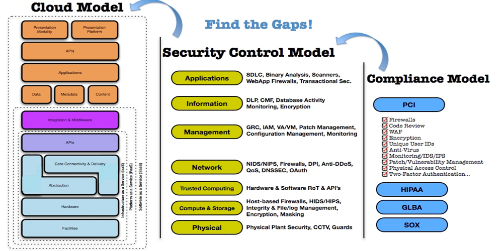

Mandate
To help clients capitalize on full spectrum of cloud computing benefits, ISA Clouds' Cloud Consulting and Architecture Design Services provide the experience and proven cloud strategies needed for existing infrastructure evaluation, readiness assessment, tailored adoption strategies and successful implementation for quicker return-on-investments.
ISA Clouds Advantage
Client business focus for higher success rate and adoption ratio
Technology focus leads to innovation and lower TCO
Thought leadership brings best practices
Focus on mitigating enterprise risk and failures
Investment in solutions to drive faster time-to-market
Overview

Cloud Adoption is a complex process. Multiplicity of options add to confusion about a viable cloud strategy. IT and Business teams follow different approaches to cloud adoption.

IT has primary challenge is to improve efficiency by building and automating infrastructure without compromising security and regulatory compliance needs.
Business, on the other hand, prefer to quickly adopt cloud, to launch innovative business systems and to maximize business value.
Cloud adoption journey, needs to consider several providers, which specialize in infrastructure, platform and applications. Bringing them together to suit business needs is a daunting task.
Lack of single point of accountability, unclear SLAs, multiple pricing models, and contracts’ terms pose challenges for enterprises to adopt cloud. Adoption initiatives become time consuming and challenging, hence, may not deliver the right business value.
Need for a comprehensive set of cloud service offerings to reconcile these varied elements to cloud adoption is apparent. Enterprises need unbiased vendor agnostic Cloud Consulting Partner as their navigator on the cloud adoption journey.
ISA Clouds takes complete life cycle ownership of your cloud initiative, providing the convenience of single-point accountability and amplifying business outcomes with experience and expertise in this domain.
Cloud Computing Consulting
ISA Clouds' Cloud Computing Consulting Service is focused at cloud readiness quotient assessment. ISA Clouds Consultants draw-up a cloud road map in conjunction with your business needs and existing IT infrastructure. Based on the unique needs of enterprises, the customized cloud services catalogue together with deployment options is put together, supported with return-on-investment plan.
The services include:
Readiness Assessment Workshops
Identification of Cloud Services Catalogue
Cloud Adoption Roadmap
ROI and Business Case Organizational
Change Management
Governance, Risk and Compliance Advisory
Cloud Readiness Assessment
ISA Clouds – Cloud Readiness Workshop is a comprehensive review of your business. A thorough review of your organization, operations, and technology, this assessment is carried out over a period of approximately two weeks and focuses on evolving your business to a point where you are ready to move a significant portion of your IT environment to the cloud.
During the assessment, ISA Clouds team will work with clients to:
Examine client’s current business and IT strategy
Undertake a detailed financial analysis, using our cloud 'total cost of ownership' tool
Develop a detailed roadmap and initial business case to support your journey to the cloud
Cloud Migration Strategy
Cloud Computing has commoditized IT infrastructure and allows companies of all sizes to be more agile and cost efficient, but heed this caution - it isn't for everything.
In developing Cloud Migration Strategy for cloud computing, enterprises need to keep in mind that there are applications that are terrible candidates for cloud, just as there are systems that lend themselves to the cloud.
In any case, it's worthwhile to take a look at what Cloud Migration Strategy recommendations by ISA Clouds' seasoned Cloud Consultants. As there is always value that public cloud, hybrid and private cloud services can bring to the enterprise.
Cloud Security – Overview
IT Risk, Security and Governance team at ISA Clouds offers explicit and specialized Cloud Security Consultation and Implementation Services. In the experiences gained over the years, the Cloud Security domain can be categorized as represented here, along with the subcomponents and list of services offered under each broader head, i.e. Governance in Cloud and Operating in the Cloud:
Cloud Security Framework
Cloud Security Strategy
Based on the workloads that is planned for migration to the cloud, ISA Clouds Consultants define and deliver a risk-based security framework that addresses Compliance and Privacy Regulations, as well as tightly integrate with the existing security controls of the enterprise. The service components include:
Data Security
Application Security & Vulnerability Management
Identity Management & Governance
Access Management & Federation
Security Information & Event Monitoring
Compliance & Security Management
Cloud Adoption Strategy

Applications’ Migration to Cloud
ISA Clouds Cloud Migration services are utilized for cloud-enabled and can be boarded on public, hybrid or private cloud. using appropriate data migration, application migration, application remediation, and user experience services. The service components include:
Services On-boarding
Application & Data Migration
Application Remediation Services
Development & Testing Services
Cloud Applications’ Development
ISA Clouds offers native cloud services capabilities involving collaborative and ubiquitous services. ISA Clouds advantage enables enterprises for competitive business advantage through sustained innovation.
The service components include:
Design & Develop Application for the Cloud
Software Development on Platforms-as-a-Service
Software-as-a-Service Development